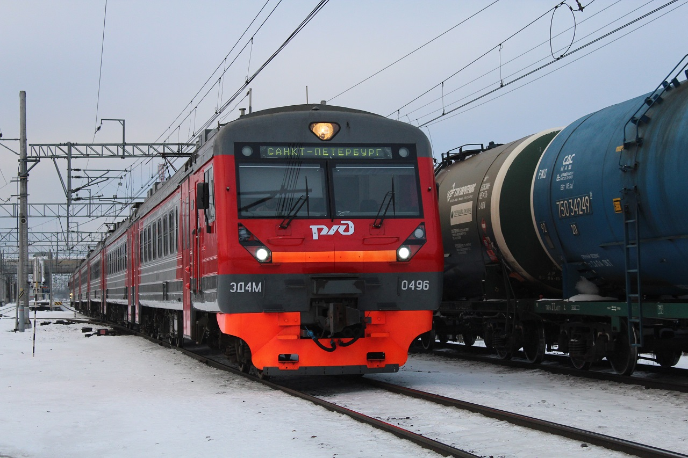

Редкий вариант головного вагона
«Кософар» (иначе «косые фары») — прозвище поздних электропоездов ЭД4М, у которых головной вагон получил обновлённую маску кабины машиниста с характерно наклонёнными, «косыми» блоками буферных фонарей. Обновлённая кабина появилась в апреле 2012 года — первым её получил ЭД4М-0406, а вместе с ней пришли более длинный объединённый маршрутный указатель и упрощённое лобовое стекло. Именно поэтому такие поезда встречаются редко: новую маску успели получить лишь самые последние составы серии, выпускавшиеся Демиховским заводом в 2012—2016 годах, а затем производство ЭД4М было прекращено в пользу ЭП2Д. Последний поезд серии — ЭД4М-0496 — тоже относился к «кософарам». Раньше, с 2009 года, лобовая часть маски получила лишь дополнительные подножки и поручни, так что «кософар» — это именно поздний дизайн кабины.